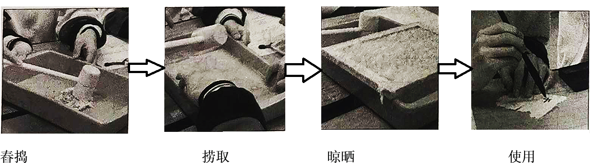

2021年北京市中考历史试题 · 选择题 第1、2、3、4、5题
1. 夏、商、西周三代是中华文明的第一个高峰期，这一时期精神文明的表征是甲骨文的应用，物质文明的集中表现则是
A. 打制石器B. 原始陶器C. 青铜铸造D. 瓷器烧制
2. 以下是中国古代一位历史人物年谱（部分）。对此解读正确的是
公元前 141年 | 公元前 136年 | 公元前 129年 | 公元前 127年 | 公元前 118年 | 公元前 87年 |
即皇帝位 | 置五经博士 | 派卫青等北击匈奴 | 颁布“推恩令” | 下令铸造五铢钱 | 崩，葬于茂陵 |
A. 该年谱用年号纪年
B. 秦始皇开创了皇帝制度
C. 该帝王在位35年
D 汉武帝巩固大一统王朝
汉武帝巩固大一统王朝
3. 某班同学为体验我国古代一项伟大发明的工艺流程，进行了以下实践活动。这项发明

A. 对作战方式产生了巨大影响
B. 发展中医学的治疗理论
C. 促进了远洋航海技术的发展
D. 推动文化的传播和发展
4. 有者认为：安史之乱后唐朝能够延续,这项工程发挥了重要作用。它的功用不仅是南粮北调，更是把南北融为一体。材料中的“这项工程”是
A. 都江堰B. 灵渠C. 大运河D. 长城
5. 以下两组图片共同反映的主题是


A 政治制度完备
B. 农业技术进步
C. 海外贸易发达
D. 文学艺术繁荣